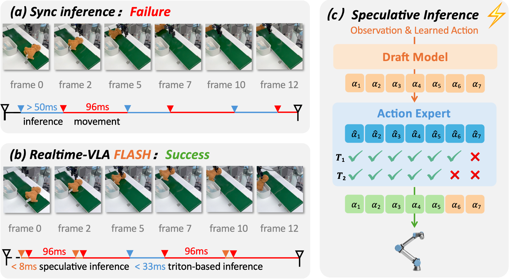
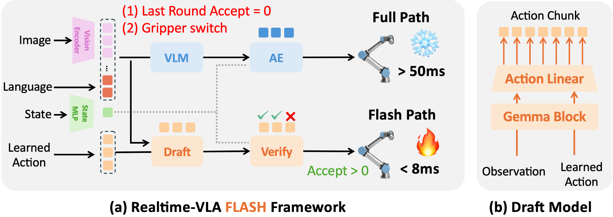
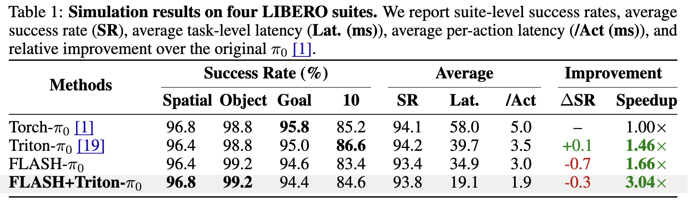
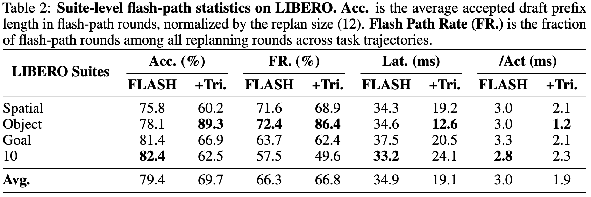
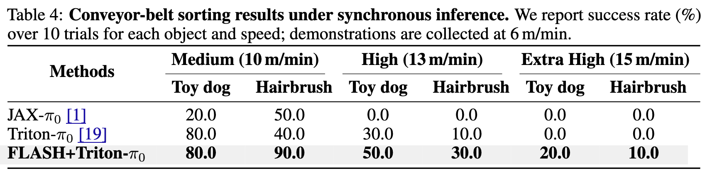

Why diffusion-based VLAs need faster inference
dVLAs generate high-quality action chunks, but synchronous full-path inference can make robot commands stale in reactive scenes.

Problem. Action chunking reduces how often a dVLA replans, but each refresh still runs the full image-encoding, VLM-prefill, and action-denoising pipeline. During this delay, the robot keeps executing an open-loop chunk, which can become stale in reactive scenes.
Speculative Inference. A natural solution is to avoid rerunning the full inference path. But unlike LLMs or AR-VLAs, dVLAs produce continuous actions through iterative denoising, leaving no token-level probability for accepting or rejecting a draft.
Insight. Flow matching provides structure for consistency verification, and smooth-motion phases make nearby draft actions predictable.
FLASH turns full inference into a dual-path runtime
FLASH keeps the original full path as a reliable anchor and adds a speculative path for rounds where a cheap draft can be verified.

❄️ Full path. Runs Image Encoder, VLM prefill, and Action Denoise to refresh context and produce high-fidelity actions.
🔥 Flash path. Runs the Image Encoder on the latest observation, then drafts and verifies a candidate action chunk in parallel, returning the longest consistent prefix.
Phase-aware fallback. Smooth motion often tolerates small draft errors, while final adjustments(eg. gripper switches) require higher-fidelity full-path actions.
Lower latency without sacrificing task performance
On LIBERO, FLASH+Triton reduces average inference latency from 58.0 ms to 19.1 ms with only a 0.3-point drop in average success rate. On real conveyor-belt sorting, lower latency reduces stale action chunks and extends the speed range for grasping moving objects.



Affiliations
Citation
@article{niu2026realtimevlaflash,
title={Realtime-VLA FLASH: Speculative Inference Framework for Diffusion-based VLAs},
author={Niu, Jiahui and Gu, Kefan and Zhao, Yucheng and Liang, Shengwen and Wang, Tiancai and Hu, Xing and Wang, Ying and Li, Huawei},
journal={arXiv preprint arXiv:2605.13778},
year={2026}
}